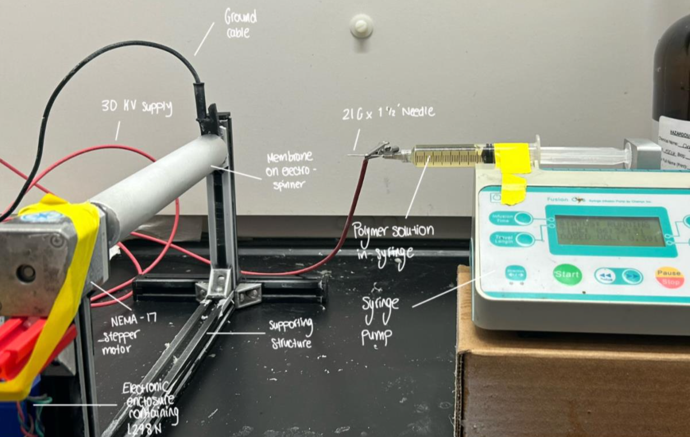
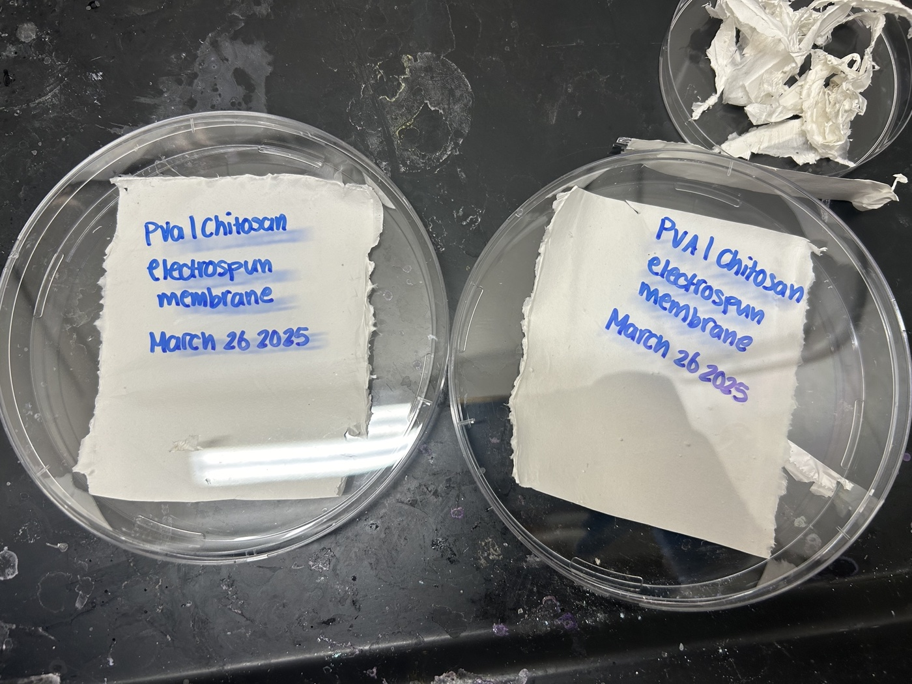
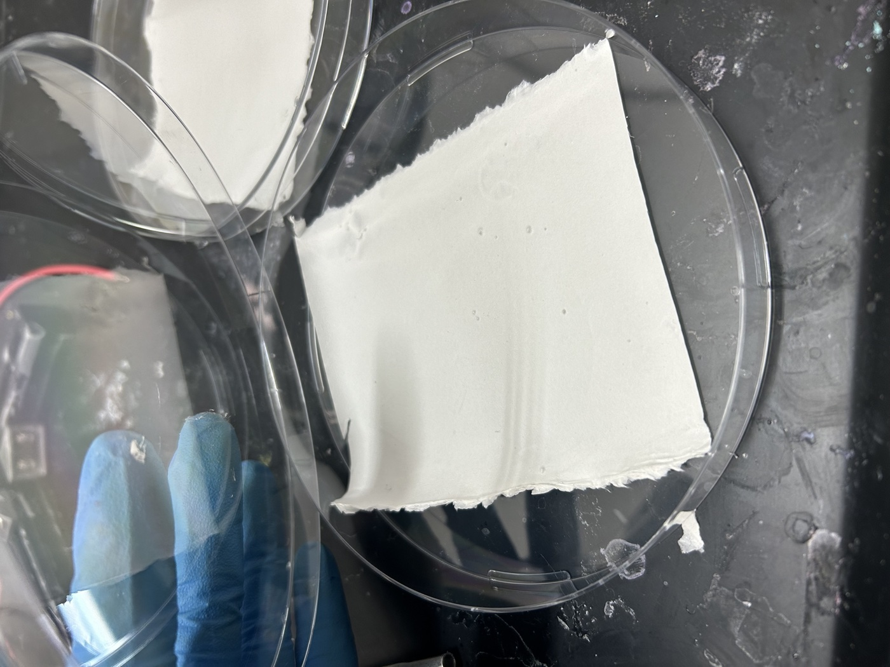
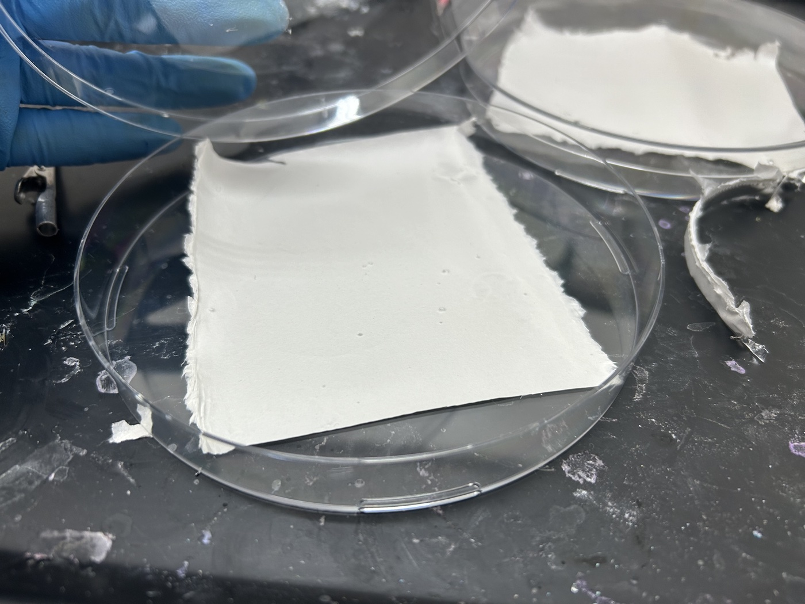

Producing chitosan:PVA polymer membranes by electrospinning, characterising the spinning solution's rheology, and using a designed experiment to relate process parameters to the membrane produced.
Freire-Gormaly Lab, York University · Researcher · April 2024 to August 2025
Electrospinning draws a polymer solution into fine fibres using a high electric field, building up a non-woven mat whose fibre diameter and areal density depend on solution properties and process settings. I worked on chitosan:PVA blend membranes, targeting air-filtration performance.
Rather than varying one spinning parameter at a time, a multilevel factorial design in MATLAB was used, so interactions between parameters were visible instead of assumed away. A related coating chemistry effort using the same lab's electrospinning process, aimed at reverse osmosis anti-fouling instead of air filtration, is covered separately at RO anti-fouling coatings.
A syringe pump, a high-voltage supply, and a grounded collector

The frame and collector were built from scratch, not bought as a kit. Aluminium stands were cut to length on a saw and bolted together with angle brackets, with gaskets at the joints to damp vibration during operation. The collector itself is a cylindrical aluminium drum, wrapped in fresh foil before every run so the finished membrane lifts off cleanly.
Driving the collector is a purpose-built e-box that isolates the control electronics from the high-voltage side of the rig: an Arduino Uno, an L298N motor driver (a motor shield was used on one build), and a NEMA-17 stepper. Firmware written in C# spins the collector continuously for up to 36 hours while the syringe pump runs at a fixed flow rate set from a separate Taguchi-designed screening, distinct from the full-factorial study below.
A CAD render of the rig, which I built but did not design in CAD, is still pending and will be added here.
Four spinning parameters at three or four levels each, run as a full factorial rather than one factor at a time, 108 combinations in total.
| Parameter | Levels |
|---|---|
| Chitosan:PVA concentration | 6:1, 8:2, 10:3, 12:4 (% w/v) |
| Applied voltage | 12, 16, 20 kV |
| Needle diameter | 0.5, 0.7, 1.2 mm |
| Collector distance | 10, 12, 14 cm |
| Design | Full factorial, 4 × 3 × 3 × 3 = 108 runs |



Characterising the spinning solution before blaming the process
Fibre formation depends on how the chitosan:PVA solution behaves under shear, not just on its concentration. Rheological data was processed and fit to a power-law (Ostwald-de Waele) model in MATLAB to extract the flow behaviour index and consistency coefficient for each solution formulation, relating shear-thinning behaviour and processing conditions to fibre formation and membrane quality, so shifts in spinnability could be tied back to solution rheology rather than treated as unexplained fabrication variance.
Rheology plots and the MATLAB power-law fitting script to be added.
The layout and operating requirements for a closed-loop filtration test rig were developed, using a HEPA-filtered air supply and an SMPS particle counter to allow quantitative efficiency measurement under controlled particle size distributions. Airflow performance was evaluated against ASHRAE 62.1 (indoor air quality) and ASHRAE 52.2 (particulate filtration) criteria. The rig was sketched and speced but not yet built, and the design work will need to be redrawn and documented properly here.
Rig sketches and design notes to be added.